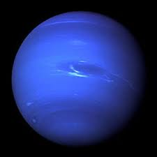

Знайомство із Сонячною системою

Сонце

Венера

Земля

Марс

Меркурій
Нептун
Плутон

Сатурн

Уран

Юпітер
На головну
Сонце
 Центральне тіло нашої планетної системи — Сонце. Утіленням Сонця в грецькій міфології був бог Аполлон.
Центральне тіло нашої планетної системи — Сонце. Утіленням Сонця в грецькій міфології був бог Аполлон.
 Термоядерні реакції продовжуватимуться, поки в ядрі Сонця не вичерпаються запаси Гідрогену. Нині вони складають близько 60 % маси Сонця. Такої кількості вистачить щонайменше на кілька десятків мільярдів років.
Наше Сонце – джерело не тільки тепла та світла. Його зовнішні зони – фотосфера, хромосфера та корона – випромінюють потоки невидимих ультрафіолетових і
Термоядерні реакції продовжуватимуться, поки в ядрі Сонця не вичерпаються запаси Гідрогену. Нині вони складають близько 60 % маси Сонця. Такої кількості вистачить щонайменше на кілька десятків мільярдів років.
Наше Сонце – джерело не тільки тепла та світла. Його зовнішні зони – фотосфера, хромосфера та корона – випромінюють потоки невидимих ультрафіолетових і
 рентгенівських променів, які впливають на характер процесів у земній атмосфері. Ще багато років тому вчені помітили, що активність Сонця підпорядковується своєрідним циклам, протягом яких вона досягає максимального значення, а потім знову спадає. Це відбувається приблизно кожні 11 років. У роки максимальної сонячної активності збільшується кількість плям та спалахів на поверхні світила, невидиме випромінювання досягає найбільшої інтенсивності. У цей час на Землі виникають магнітні бурі, відбуваються порушення радіозв’язку.
рентгенівських променів, які впливають на характер процесів у земній атмосфері. Ще багато років тому вчені помітили, що активність Сонця підпорядковується своєрідним циклам, протягом яких вона досягає максимального значення, а потім знову спадає. Це відбувається приблизно кожні 11 років. У роки максимальної сонячної активності збільшується кількість плям та спалахів на поверхні світила, невидиме випромінювання досягає найбільшої інтенсивності. У цей час на Землі виникають магнітні бурі, відбуваються порушення радіозв’язку.
Характеристики Сонця
- Діаметр — 1 392 000 км
- Період обертання навколо осі — 27 діб
- Маса — 332 946 мас Землі
- Об’єм — 1 303 600 об’ємів Землі
- Температура поверхні — 5500 °C
- Температура ядра — 15 000 000 °C
- Період обертання навколо центра Галактики — 225 млн років